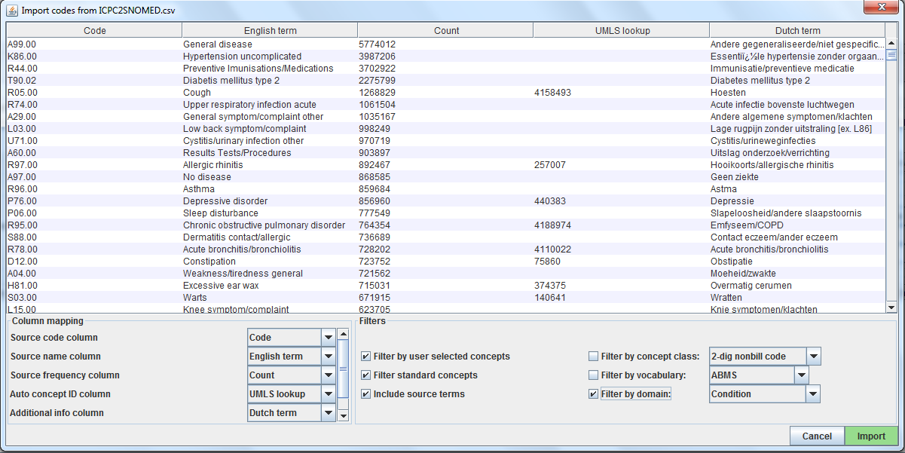
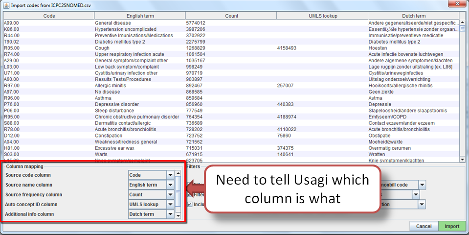
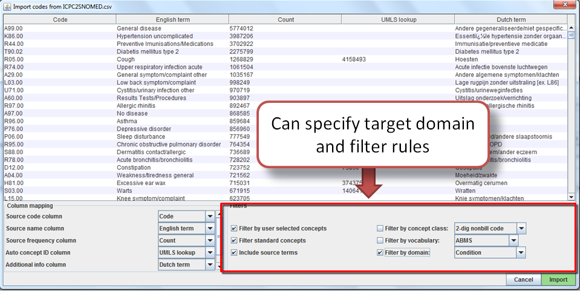
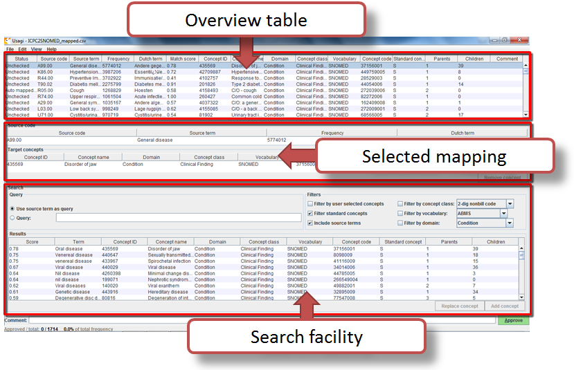
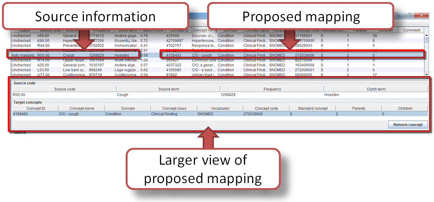
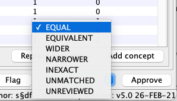
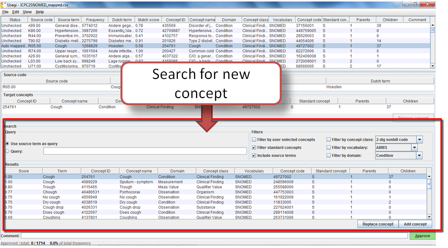
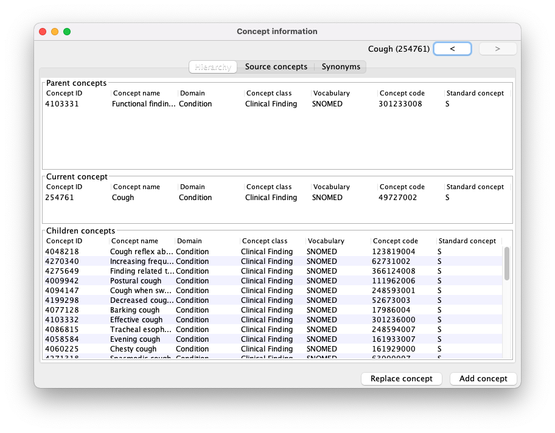

Export source codes from source system into a CSV or Excel (.xlsx) file. This should at least have columns containing the source code and an English source code description, however additional information about codes can be brought over as well (e.g. dose unit, or the description in the original language if translated). In addition to information about the source codes, the frequency of the code should preferably also be brought over, since this can help prioritize which codes should receive the most effort in mapping (e.g. you can have 1,000 source codes but only 100 are truly used within the system). If any source code information needs translating to English, use Google Translate to do that.
Note: source code extracts should be broken out by domain (i.e. drugs, procedures, conditions, observations) and not lumped into one large file.
Source codes are loaded into Usagi from the File –> Import codes menu. From here an “Import codes …” will display as seen in Figure 1.
 Figure 1: Usagi Source Code Input Screen
In Figure 1, the source code terms were in Dutch and were also translated into English. Usagi will leverage the English translations to map to the standard vocabulary.
 Figure 2: Telling Usagi how to Read Input File
Seen in Figure 2, the Column mapping section is where you define for Usagi how to use the imported CSV. If you mouse hover over the drop downs, a pop-up will appear defining each column. Usagi will not use the Additional info column(s) as information to associate source codes to Vocabulary concept codes; however this additional information may help the individual reviewing the source code mapping and should be included.
Finally you can set some restrictions for Usagi when mapping. For example, in Figure 3, the user is mapping the source codes only to concepts in the Condition domain. By default, Usagi only maps to Standard Concepts, but if the the option ‘Filter standard concepts’ is turned off, Usagi will also consider Classification Concepts. Hover your mouse over the different filters for additional information about the filter.
One special filter is Filter by automatically selected concepts / ATC code. If there is information that you can use to restrict the search, you can do so by providing a list of CONCEPT_IDs or an ATC code in the column indicated in the Auto concept ID column (semicolon-delimited). For example, in the case of drugs there might already be ATC codes assigned to each drug. Even though an ATC code does not uniquely identify a single RxNorm drug code, it does help limit the search space to only those concepts that fall under the ATC code in the Vocabulary. To use the ATC code, follow these steps:
You can also use other sources of information than the ATC code to restrict as well. In the example shown in the figure above, we used a partial mapping derived from UMLS to restrict the Usagi searh. In that case we will need to use ‘Auto concept ID column’.
 Figure 3: Defining filter rules when mapping
Once all your settings are finalized, click the “Import” button to import the file. The file import will take a few minutes as it is running the term similarity algorithm to map source codes. # Reviewing Source Code to OMOP Vocabulary Concept Maps
Once you have imported your input file of source codes, the mapping process begins.
 Figure 4: Usagi Matching Screen
In Figure 4, you see the Usagi screen is made up of 3 main sections: an overview table, the selected mapping section, and place to perform searches.
Note that in any of the tables, you can right-click to select the columns that are shown or hidden to reduce the visual complexity.
The Overview Table shows the current mapping of source codes to concepts. Right after importing source codes, this mapping contains the automatically generated suggested mappings based on term similarity and any search options. In the example in Figure 4, the English names of Dutch condition codes were mapped to standard concepts in the Condition domain, because the user restricted the search to that domain. Usagi compared the source code descriptions to concept names and synonyms to find the best match. Because the user had selected ‘Include source terms’ Usagi also considered the names and synonyms of all source concepts in the vocabulary that map to a particular concept.If Usagi is unable to make a mapping, it will map to the CONCEPT_ID = 0.
 Figure 5: Reviewing an Usagi Match
It is suggested that someone with experience with coding systems help map source codes to their associated standard vocabulary. That individual will work through code by code in the Overview Table to either accept the mapping Usagi has suggested or choose a new mapping. For example in Figure 5 we see that the Dutch term “Hoesten” which was translated to the English term “Cough”. Usagi used “Cough” and mapped it to the OMOP Vocabulary concept of “4158493-C/O - cough”. There was a matching score of 0.58 associated to this matched pair (matching scores are typically 0 to 1 with 1 being a confident match), a score of 0.58 signifies that Usagi is not very sure of how well it has mapped this Dutch code to SNOMED. Let us say in this case, we are okay with this mapping, we can approve it by hitting the green “Approve” button in the bottom right-hand portion of the screen.
In Usagi 1.4+, we can assign an equivalence status when approving. This allows the reviewer to capture how well the target concept(s) capture the meaning of the source term.

The equivalence definitions are based on the the HL7 concept map equivalence:
 Figure 6: Searching for a New Concept
There will be cases where Usagi suggests a map and the user will be left to either try to find a better mapping or set the map to no concept (CONCEPT_ID = 0). In the example given in Figure 6, we see for the Dutch Term “Hoesten”, which was translated to “Cough”. Usagi’s suggestion was restricted by the concept identified in our automatically derived mapping from UMLS, and the result might not be optimal. In the Search Facility, we could search for other concepts using either the actual term itself or a search box query.
When using the manual search box, one should keep in mind that Usagi uses a fuzzy search, and does not support structured search queries, so for example not supporting boolean operators like AND and OR.
To continue our example, suppose we used the search term “Cough” to see if we could find a better mapping. On the right of the Query section of the Search Facility, there is a Filters section, this provides options to trim down the results from the OMOP Vocabulary when searching for the search term. In this case we know we want to only find standard concepts, and we allow concepts to be found based on the names and synonyms of source concepts in the vocabulary that map to those standard concepts.
When we apply these search criteria we find “254761-Cough” and feel this may be an appropriate Vocabulary concept to map to our Dutch code, in order to do that we can hit the “Replace concept”, which you will see the Selected Source Code section update, followed by the “Approved” button. There is also an “Add concept” button, this allows for multiple standardized Vocabulary concepts to map to one source code (e.g. some source codes may bundle multiple diseases together while the standardized vocabulary may not).
When looking for appropriate concepts to map to, it is important to consider the ‘social life’ of a concept. The meaning of a concept might depend partially on its place in the hierarchy, and sometimes there are ‘orphan concepts’ in the vocabulary with few or no hierarchical relationships, which would be ill-suited as target concepts. Usagi will often report the number of parents and children a concept has, and it also possible to show more information by pressing ALT + C, or selecting VIEW –> Concept information in the top menu bar.
 Figure 7: Concept information panel
It shows general information about a concept, as well as its parents, children, synonyms and other source codes that map to the concept. Users can use this panel to navigate the hierarchy and potentially choose a different target concept.
In addition, Usagi allows to directly open Athena in your default browser for the selected concept. When a concept is selected, press ALT + W or click on View-> Athena (web). Similarly, we can search google for a source code description with ALT + G or View –> Google (web).
When you import your source codes there is an option to add information about “Auto concept ID column”. If there is information already known that will allow you to map your source data to a CONCEPT_ID, you can include that in the file you upload into Usagi. Once loaded, the Overview Table will list these codes with a status of “Auto mapped to 1” if only one CONCEPT_ID was provided, or just “Auto mapped” if there were more. You still will be required to approve these auto mappings using the “Approve” button, or if you really trust the underlying information, you can sort by status, select all codes with status ‘Auto mapped to 1”, and click Edit –> Approve selected.
Continue to move through this process, code by code, until all codes have been checked. In the list of source codes at the top of the screen, by selecting the column heading you can sort the codes. Often we suggest going from the highest frequency codes to the lowest. In the bottom left of the screen you can see the number of codes that have approved mappings, and how many code occurrences that corresponds to.
It is possible to add comments to mappings, which could be used to document why a particular mapping decision was made.
Best Practices:
Once you have created your map within USAGI, the best way to use it moving forward is to export it and append it to the OMOP Vocabulary SOURCE_TO_CONCEPT_MAP table.
To export your mappings go to File –> Export source_to_concept_map. A pop-up will appear asking you which SOURCE_VOCABULARY_ID you would like to use, type in a number (it is suggested to make the ID greater than 100 so that it can be easily identified as a non-OMOP vocabulary). Usagi will use this number as the SOURCE_VOCABULARY_ID which will allow you to identify your specific mapping in the SOURCE_TO_CONCEPT_MAP table. For example, if you SOURCE_VOCABULARY_ID = 200 then when mapping to TARGET_CONCEPT_IDs you can filter the SOURCE_TO_CONCEPT_MAP table where SOURCE_VOCABULARY_ID = 200.
After selecting the SOURCE_VOCABULARY_ID, you give your export CSV a name and save to location. The export CSV structure is in that of the SOURCE_TO_CONCEPT_MAP table. This mapping could be appended to the OMOP Vocabulary’s SOURCE_TO_CONCEPT_MAP table. It would also make sense to append a single row to the VOCABULARY table defining the SOURCE_VOCABULARY_ID you defined in the step above. Finally, it is important to note that only mappings with the “Approved” status will be exported into the CSV file; the mapping needs to be completed in USAGI in order to export it.
Often a mapping is not a one-time effort. As data is updated perhaps new source codes are added, and also the vocabulary is updated regularly, perhaps requiring an update of the mapping.
When the set of source codes is updated the following steps can be followed to support the update:
Note: the additional info columns of the applied mapping are ignored. These are not merged with the additional information in the already opened mapping.
When the vocabulary is updated, follow these steps: